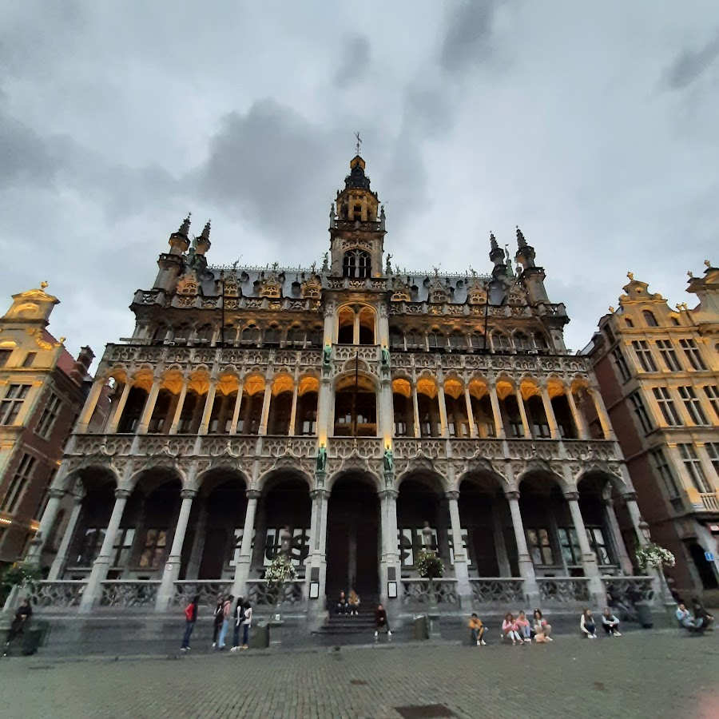
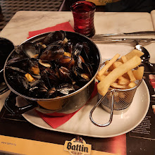
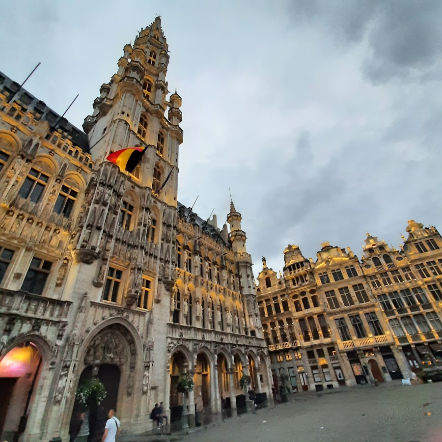
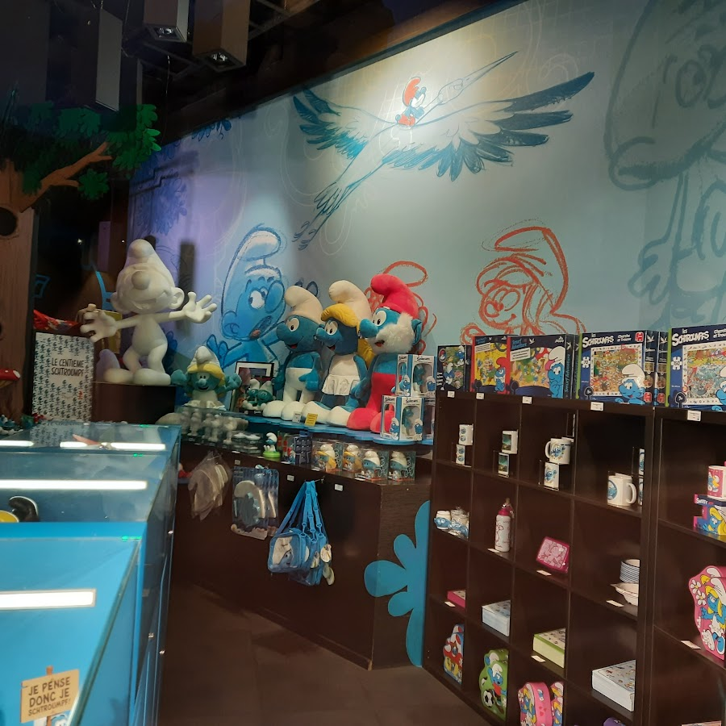
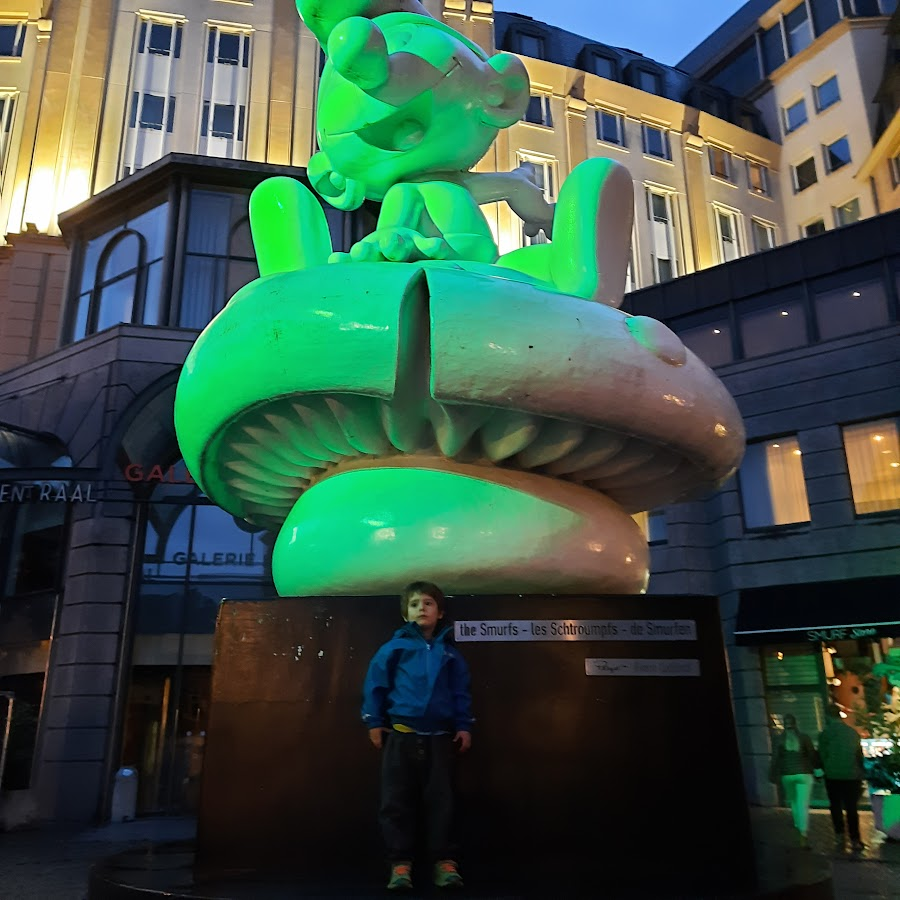
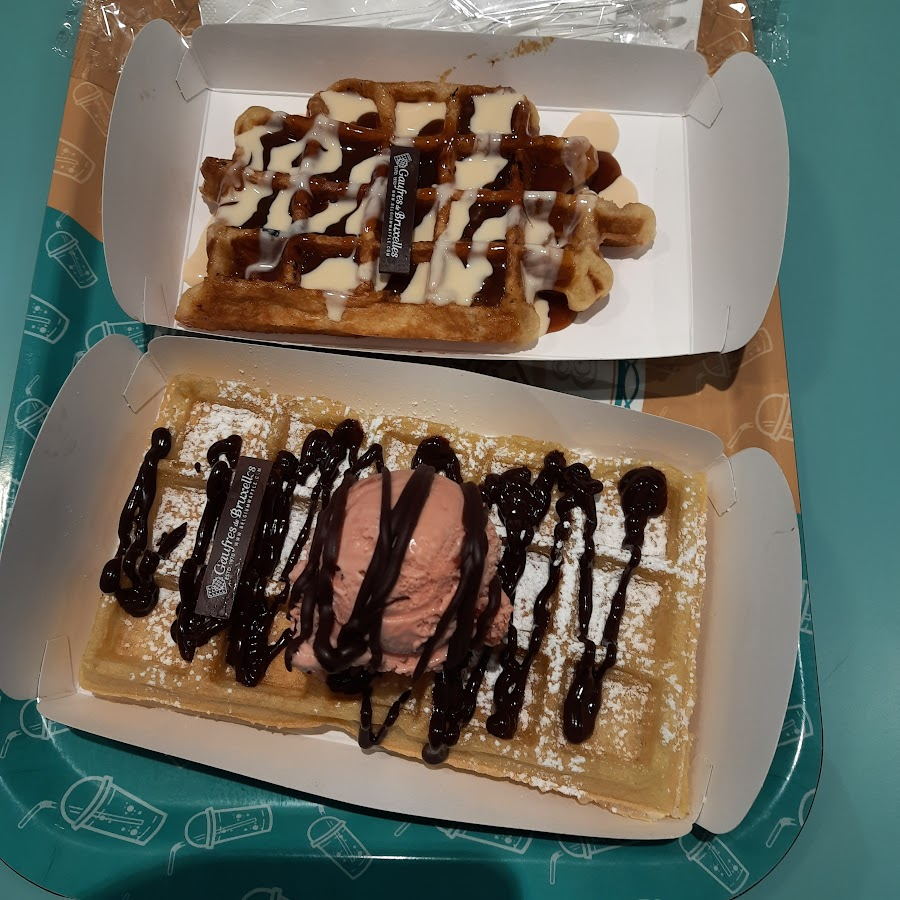
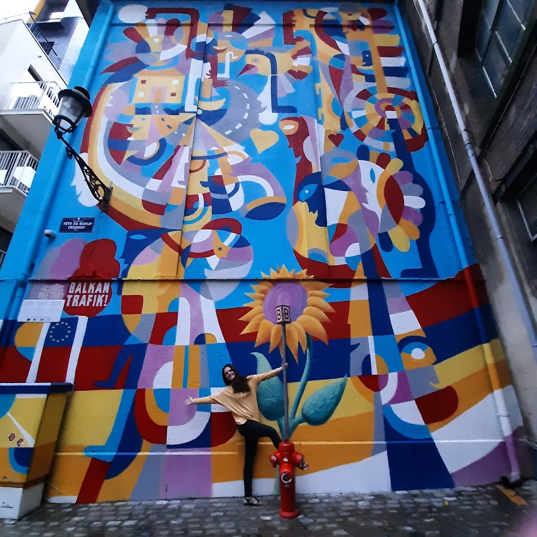

This was the second stop of our Benelux trip which started in Luxembourg. We had only one night in Brussels before heading to Holland but we made the most of it. The good start was the hotel. We stayed at Funkey, which was great for a stay with kids. As the name says the place is all about fun.
Tha Play Area in the Hotel was a success with the little one
Even the floors are totally colourful, there is a play area for kids with lots of toys and games and a fridge where the parents can grab a beer or two - for free! What else does a parent want, right? Our son was 3 years old at the time and he really enjoyed playing with the games and toys. There was also a part for older kids with video games.
The Grand Palace
After checkin we headed to the Grand Palace, the main square in Brussels. We decided to drive there and park in one of the garages downtown, to avoid loosing much time with public transportation, since we had one two nights in the city and were travelling with a toddler.
We arrived around sunset time and just as we took a few steps inside the big square all lights of the bulding went on, since it was just starting to get dark, and I found this moment pretty magical.

The Grand Palace, in Belgiums's capital - a must-see in the city
I must say though, that besides the beauty there is also rushed feeling, as crowds of people walk by among tourists and locals and sadly, there are also many people who are beggin for money which makes you feel of course less joyfull as you are reminded of social injustice and poverty. We were there in 2021,right after Covid, so that might have made things worse as well.

Moules et Frites, a typical dish of french influence
Soon we got hungry and went to a nearby restaurant where we ordered Moules et Frites, a dish that I craved since my time in France and never found at any place in Germany. It's served on a big plate full of hot mussels and a side dish of crunchy french fries, simply delicious. This dish is originally from Belgium and the north of France. People speak french in Brussels by the way, but most people that deal with tourists also speak fluent english.

The lights turned on as soon as we arrived, giving a magical touch to the moment
Smurfs, Waffles and Chocolate
I came to find out during this trip that the Smurfs were actually created in Belgium. There is the original store with lots of cute stuff and books and a statue of a smurf on its mushroom right in front of it. I’ve been a fan since when I was a child so I took the opportunity, of course, to take some pictures and buy some souvenirs. My son was also very excited - I don’t know if because of the Smurfs themselves or because he saw his mom behave like a kid.

A whole store dedicated to these little blue creatures, paradise for fans and kids
This was our last stop on that day before heading back to the hotel. We still had one (last day) to explore before heading to the Netherlands so the next day early we departed after breakfast with bags already in the car and parked again close to the main square to see it in day light and take a walk around the center.

No visit to Brussels is complete without trying some waffles and chocolate - I would also suggest the beer. So we headed to one of the big “Waffle Places” which pop every where near the main square, we just walked in at one that looked inviting and ordered 3 huge waffles with all types of toppings, including fruits and ice cream. They really were delicious. As a chocolate lover myself I also had my fun exploring the many “chocolateries” and choosing some delicious pieces to bring back home.

The waffles are considered one of the typical treats of the country
The Comics Capital
But it was not only the food that got us fascinated - also the many little shops full of creative and unexpected things: there is for example one store dedicated to all types of cereal and it looks like a comic book. Which speaking of- is another big thing in Belgium. Brussels is considered by many the “capital of comics”. The city really brings many characters to life, be it in graffitis on the streets, the Smurfs store mentioned above or the Comic Books Museum.

One of the things I loved in Brussels was the street art which gives vibrant vibes to the city
Last stop: Atomium
Before heading to Holland I really wanted to see the Atomium. Since we had to drive in that direction we went by car and easily found a parking spot close by. You can buy tickets and go inside but we just admired it from the outside, had a pic-nic in the garden nearby and took lots of pictures of this crazy, kind of psychedelic metallic construction.
 Tha Play Area in the Hotel was a success with the little one
Tha Play Area in the Hotel was a success with the little one